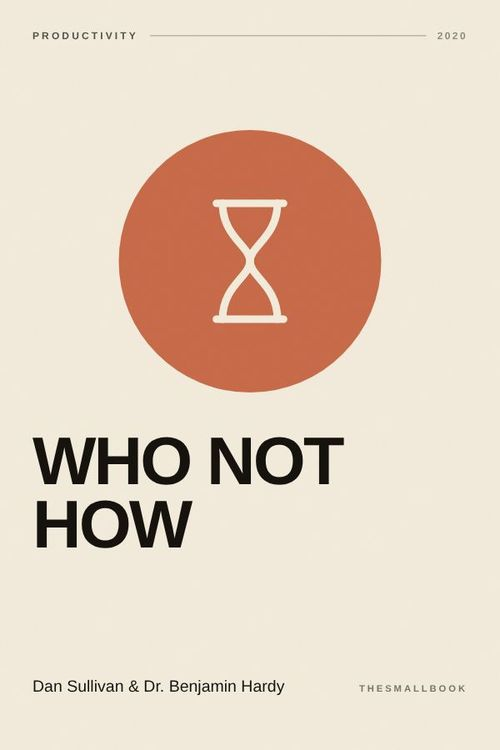

Library › Ask the Library › How do I ask for help without feeling weak?
How do I ask for help without feeling weak?
The short answer
Asking for help isn't weakness, it's how the strongest people scale. The question isn't 'how do I do this?', it's 'WHO can do this?'
The books behind the answer

Who Not How
Dan Sullivan & Dr. Benjamin Hardy · 2020 · 8 min · 6 lessons
Every 'How do I do this?' has a better question hiding inside: 'WHO can do this for me?' Freedom lives in that swap.
- The How Trap: Your Default Question Is a Cage: Swap 'how do I?' for 'who can?', the question that unlocks leverage.

Daring Greatly
Brené Brown · 2012 · 8 min · 6 lessons
Vulnerability isn't weakness - it's the birthplace of courage, connection and everything worth doing.
- Vulnerability Is Not Weakness: Asking for help is a courage rep. People connect with the honest ask, not the perfect front.

The Culture Code
Daniel Coyle · 2018 · 8 min · 6 lessons
Great cultures aren't built on talent or perks. They run on three signals: you're safe here, we share weakness, and this is where we're going.
- The Vulnerability Loop: Weakness shared is trust built. When leaders ask for help, teams become safe enough to try.

Man's Search for Meaning
Viktor E. Frankl · 1946 · 9 min · 7 lessons
Everything can be taken from a man but one thing: the freedom to choose one's attitude in any given set of circumstances.
- The Last Human Freedom: Even in the worst conditions, prisoners survived by helping each other. Connection is the human engine.
A failure that proves it
Why did Boeing's Culture Trade fail?
2019 · EGO · Loss: $20B+, 346 lives, a century of trust
Boeing engineers stopped speaking up, and planes fell. The failure to ask for help costs more than the help ever would.
Culture isn't a poster; it's who wins arguments. The day your cost-cutters can overrule your craftsmen on safety-critical calls, the countdown starts - you just don't know the number.
Questions people ask next
Can I read this in Hindi?
Yes. This answer is written in simple English. Open any linked book and choose Hindi or Hinglish to read the full lessons in your language, with audio where available.